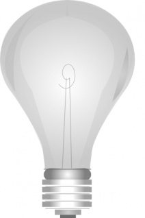
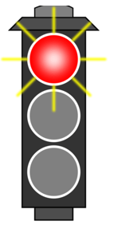

Bienvenidos a esta página web en donde veremos 4 grupos de imágenes animadas
usando los escritos de HTML, JavaScript interno y el ciclo condicional IF - THEN -
ELSE

Por favor da varias veces clic en el mouse para cambiar la imagen del bombillo
Por favor da varias veces clic en el mouse para cambiar la imagen y sus emociones

Por favor da varias veces clic en el mouse para cambiar la imagen de las luces del semáforo
Por favor da varias veces clic en el mouse para cambiar la imagen de las expresiones